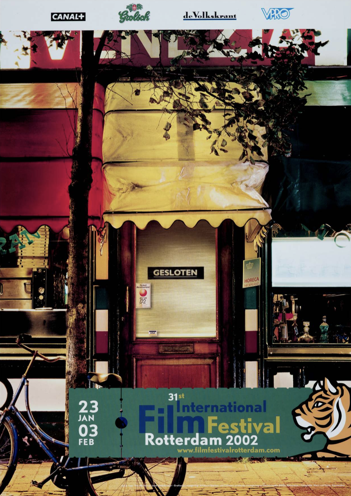

Looking back at my upbringing and my daily life in Rotterdam,
I realized how much the sight of- and happenings on these streets are a
source of inspiration in my work. In a surrounding with people who are
all great designers - how privileged I am - I started to become
intrigued by designs who were made by people who, most likely, are not
designers: vernacular design. Vernacular is defined as an informal
visual- and spoken language that belongs to a specific group of people.
It is invented rather than taught. I am curious, what is the role of
vernacular design in graphic design and communication?
read more...
I write my thesis as a letter to a first year graphic design student,
and to answer this question I start by analyzing developments in art and
design that led graphic designers to use vernacular in their work. For
this I use the International Film Festival Rotterdam (IFFR) poster as a
case-study. The IFFR has been taking place in Rotterdam each year from
1972 until today. As an event that is leading for the city of Rotterdam
and with an archive of over 50 years of posters this seems a perfect
documentation of different visual era’s in graphic design.
I introduce the material to the reader through means of categorizing
the posters by designer, and giving historical context. Through a
personal analysis of the style elements in the poster, I link it to
different theoretical sources. I see that graphic design is a way to
socially organize groups of people. By using vernacular, graphic
designers can reach a specific audience. I notice a pattern of graphic
designers reaching towards the vernacular after periods of technical
development. These technical developments have made them to distinguish
themselves. Using vernacular languages is a way in which they do.
By presenting a personal selection of contemporary graphic design
projects, I analyze which roles graphic designers embody nowadays when
using vernacular design. In the last chapter I start researching the
vernacular of my own surroundings. Through analyzing the storefronts in
my street I try to identify the design ‘strategies’ that are used. I
then question what would be the target audience me and my pen-friend
belong to, and what would be the vernacular for this? I will extend this
research in my graduation project.
Introduction
Last week my friend told me: “when I am with you, you
constantly see design in things I would never see. For instance the
bright yellow numbers construction workers spray paint on the pavement.
I wouldn’t even see it, but because you took a picture of it I am seeing
it everywhere now”.Looking back at my upbringing and my daily life in
Rotterdam, I realized how much the sight of- and happenings on these
streets are a source of inspiration in my work. Here I encounter great
designs everyday, which I keep in an archive on my phone. Over the years
this archive has been growing and growing, functioning as the content as
well as inspiration for my projects. I have been archiving these random
designs for years now. Because I am a sucker for design. And you must be
too, because you are reading a fourth years graphic design thesis. You
must probably do something with design yourself, maybe a starting
graphic designer, a curious first year?
I welcome you. Not that I am so much above you that I have the
authority to welcome you. I am also just getting started. And I can tell
you: the more you learn the more you learn you don’t know anything. This
thesis started as an attempt to understand something of graphic design,
but failed miserably. It left me with more questions… but we’re in this
together. You, first year graphic designer, and me, fourth year graphic
designer. Both curious.
When I was in your shoes, when I started graphic design at KABK, I
started to notice these random designs. Looking back I think that was
the combination of my voyeurism and learning “How Design Is Actually
Done”. In a surrounding with people who are all great designers - how
privileged we both are - I started to become intrigued with designs that
don’t feel “designed”, that have a certain rough, unpolished beauty.
Designs who were made by people who, most likely, are not designers.
Designs that are made vernacular.
In “We’re Here To Be Bad” Tibor Kalman writes “Vernacular is a slang,
a language invented rather than taught. Vernacular design is a visual
slang. More than that it’s design that is so familiar that we don’t
really see it. Seeing the vernacular is seeing the invisible. It is
looking at something commonplace - a yellow pencil, a metal folding
chair- and falling in love1”.
But we are training to become professional designers. “Invented
rather than taught” is how Kalman aims us to look at vernacular design.
Vernacular design is not done as an education, nor can it be seen as a
movement or style in design. It is a process. And a rather
straightforward one; a direct supply of design to the question of fixing
one’s practical need. It is done locally, when a store hires a sign
painter to paint their window-glass, or when the construction worker
spray paints numbers on the pavement to locate where they placed their
underground cables.
Vernacular design is practical design. It is communication without
the strategy or research that we are being taught. And I guess that
makes it direct and unfiltered; it has not been given rules. There is no
good and no bad. And that is what is good about it. So then, as wanting
to be great designers, how can we learn from vernacular? Are there ways
in which we are able to combine vernacular with strategy; as Hannah
Montana would say; the best of both worlds2? I
am curious, what is the role of vernacular design in graphic design and
communication?
This summer I have done my internship at 75B in Rotterdam, where I
had the opportunity to work on this years IFFR campaign. The IFFR has
been taking place in Rotterdam each year from 1972 until today and over
the years they have built up a reputation of placing political topics on
the agenda. In their 2021-2024 report they write “IFFR manifests itself
as a ‘window to the world’, in which Rotterdam and the Netherlands open
up to the world, and vice versa. In doing so, the festival offers space
for intercultural dialogue and reflection in the city of Rotterdam. It
stimulates the expansion of mutual understanding between cultures or the
nuancing of existing prejudices - so important in today’s polarized
climate3.” As an event that is leading for
the city of Rotterdam and with an archive of over 50 years of posters
this seems a perfect documentation for us to explore different visual
era’s in graphic design.
Kalman, Tibor and Karrie Jacobs -
We’re here to be Bad p. 124↩︎
For this chapter I divided the posters in six timeframes,
divided by six makers (see fig. 1). I chose six designers of which I
think most interestingly reflect graphic design’s development. Can we
detect certain notions that caused graphic designers to turn to the
vernacular? My ambition is not to provide you with a complete history of
graphic design, but rather, to help both you and me to start a little
more informed designers that we are.
Punk Panthers: Evert Maliangkay
Let’s look at the very beginning of the IFFR: the posters designed by
Evert Maliangkay. Maliangkay was born in Rotterdam in 1941, where he
studied at the Willem de Kooning Academy; Graphic Design by day, and
Autonomous Art by night.
One year before Maliangkay was born, Rotterdam had been bombed. In
1940, during the German Luftwaffe in the blitz of the Second World War,
almost the entire city center had been destroyed. During our first few
designers (from Evert Maliangkay until Hard Werken) the city was still
in wederopbouw, the process of rebuilding and re-organizing a broken
city. When we look at the posters designed by Maliangkay in 1974, what
is immediately striking, is the use of collage. The collage technique,
or more broadly, do-it-yourself (DIY) graphic design, emerged after the
Second World War when new technologies had been invented that made the
production of construction materials much cheaper. For instance the
invention of the photocopier in 1959. Because of the access to tools and
materials, anyone now could be an artist or designers. Artists, people,
anyone, could now pick up scissors, glue and copy a fancy design. This
showed you didn’t need to be a professional to make a great design. The
collage technique was made famous by the punk movement, who picked up
this wave of DIY design to make underground zines. The punk movement was
a reaction on the period after the war from the youth, who wanted
freedom and radically started to rebel any kind of rules or authority.
Collage technique was perfect to break away from formal design rules set
by modernist. Visual language does not only serve stylistic purpose, but
is acts as an identifier of which social group you (want to) belong
to.
Griddy Gust: Gust Romijn
From edition 6 until 10, the IFFR poster has been designed by the
Rotterdam artist and designer Gust Romijn. Gust Romijn was trained an
architect, but started to work as a sculptor, painter and graphic
artist.
When we compare these posters to the posters designed by Maliangkay,
these ones look much more structured. That is mainly due to the text
placement, that is done straight, in lines. This was a clear influence
of the use of a grid, introduced by the modernists. The modernist
movement was a completely different response to the Second World War as
we had seen from the punk movement. It was a response in which designers
wanted to create clarity and order in the world through design. Design
for one organization should have one coherent strategy. One could create
coherence by limiting the amount of choices in their design; by using a
grid.
The grid was a sheet of paper with lines, placed under or on top of
the design, on which text, image, and column measurements where decided.
Aside from using a grid, the influence of modernists was the use of less
or only monotone color, and illustrations reduced to geometric
shapes.
These new design “rules” not only created coherence but also made it
easier for designers to give specific instructions to printers. This
gave way for production processes to be mechanized and up-scaled. The
visual coherence and the mechanization soon caused big companies to hire
modernist graphic designers to look at their identity. Service providers
like airline KLM or supermarket chain Albert Heijn employed design
studios. A new genre in visual culture emerged; corporate
identities.
Corporate identities demanded a level of quality and skill that
graphic designers (like us) could only learn through a formal design
education. Where at the one side of the coin of these technical
developments, designers like Maliangkay joined the movement of designers
being ‘amateurs’ by refusing to work with them, others like Romijn used
them to keep up with the corporate business.
Rotterdamse cowboys: Hard Werken
The third ones in line to design the IFFR posters were the members of
Hard Werken. Hard Werken was a graphic design collective in Rotterdam,
formed in the late 1970’s and became quite famous in the 1980’s. They
consisted out of Henk Elenga, Gerard Hadders, Tom van den Haspel, Rick
Vermeulen, Kees de Gruiter and Willem Kars.
In the designs they made for IFFR from 1986 until 1992, Hard Werken introduced staged photography to
the poster. Gerard Hadders in an interview says the poster series are
inspired by the pre-digital special effects that were used in movies in
the 1940’s. The tiger was built into a decor for each poster, which they
would photograph into a poster. Different techniques were used: neon,
hot metal, a flower bouquet or fake blood on pavement.
Hard Werken identified themself with the postmodern generation of
designers. Postmodernism, as the term indicates, was formed opposed the
modernist movement. It was more a way of thinking about design than it
could be described as an art movement. Where modernist designers claimed
their stance as being an authority in deciding what is “good” design,
postmodern designers wanted to erase the boundaries between ‘high’ and
‘low’ art because they found anything could be art. Artists like
Duchamp, which I don’t doubt you know, presented “found” objects like a
toilet with a plate saying “fountain”, and that was then art. It rocked
the art world.
Hard Werken worked with found objects through staged photography. In
their book “Hard Werken - One For All” they show that by presenting
everyday objects in a different context, staged photography was a way
through which they could imagine a new world within the already existing
one.
This utopian idea can well be expressed in the quote “Sous les pavés,
la plage!”, which loosely translates to “underneath the pavement the
beach”, a slogan used in Paris student revolts in May 1968. The slogan
expressed the wish to imagine another world, where other possibilities
and alternative ways of being and living existed, beyond all the social
and political structures that we are in, beyond the artificiality of
living in a big city.
At this time Rotterdam was being rebuilt and growing into a big city.
The harbor expanded into the largest seaport of Europe, housing big
companies. Modernist designers grew into marketing designers, using
visual strategies. Postmodern designers like Hard Werken then used
vernacular as a way to look critical at the growing consumer culture in
Rotterdam.
Kisman and the PC: Max Kisman
From 1996 until 2002 Max Kisman designed the festival poster. Kisman
was born in Doetinchem, and between 1972 and 1977 he studied typography,
illustration, animation and graphic design, at the AKI in Enschede and
the Rietveld Academy in Amsterdam.
When we look at the posters, we see that Kisman was the first to
introduce digital effects. The rise of the personal-computer in the late
1990’s gave way to designers to work with image and text in programs. In
Kisman’s words “The introduction of the computer showed that everything
is malleable. Manipulable”. The computer brought upon a new generation
of graphic designers that mastered design programs, and where able to
design basically anything. Graphic designers started to play with
typefaces and effects on images.
Not only did the home computer give way to designers to broaden their
visual language, but when the home computer became affordable it became
a tool for everyone and anyone to be able to design. Now ‘amateurs’
could reach the same level of quality as designers. The level of quality
that modernist graphic designers held for the profession, was being
challenged. And with that, the idea of the graphic designer as a
professional. Because if everyone was now a good designer, how could you
differentiate yourself?
To Romanticize or not to romanticize: Ontwerpwerk
After Max Kisman, Ontwerpwerk designed the IFFR poster. Ontwerpwerk
started in 1986 as an advertisement and strategy bureau, in The Hague.
Nowadays they are with a team of 40 designers, digital experts and
strategists, and are still operative from The Hague. On the 19th of
January I was able to talk to former Ontwerpwerk member Stephan Csikós
through e-mail.

Image source: IFFR & Stadsarchief RotterdamImage source: personal archive Stephan Csikós
What is particularly striking in their series of posters
is their 2002 poster, in which they showcase a series of stores and
restaurants in Rotterdam, with the festival’s information and the IFFR
logo by Max Kisman on top. In the first poster Ice Cream parlor Venezia
is photographed, and in the second the African restaurant Mamma Essi.
Stephan Csikós told me that the idea behind this design was that
everyone had to leave because the Film Festival had begun.
What is interesting when comparing these posters to the ones made by
Kisman, is that through the facades Ontwerpwerk is quite literally using
vernacular in their design. We can start to detect a pattern here: when
technical developments in the graphic field take place, graphic
designers are made to rethink their position. In commercial settings,
often by having to distinguish themselves in a way. In “We’re Here to be
Bad” Tibor Kalman writes: “what is then the point of practicing graphic
design? To try and unlearn design. To not design in ways corporations
have taught us. And one way to do this, is to look at vernacular
design”.
With their photographs of Roffa’s streetvernacular, Ontwerpwerk
addresses the inhabitants of Rotterdam. They address them with something
Rotterdam has come to be known for; their multicultural identity. This
identity started to develop when the rebuilt of the city after WW2
demanded extra hands. In the years after the war many guest workers came
to the Netherlands. Most of those guest workers stayed and became
working-class citizens, opening up their own small business.
These businesses are one of the physical manifestations of the visual
vernacular of a people. People with another cultural background then us
can form an interesting subject to use the vernacular of. And for many
graphic designers, it does. However, an important side note to this is
placed by Cuban designer Ernesto Oroza: ““Romanticizing aesthetics that
are born from poverty and scarcity should be avoided. Vernacular should
not be seen as an aesthetic practice - even though in my opinion it
often has beauty - it should be seen as fixing one’s practical need with
the tools one has”.
The shepards: 75B
In 2008 the Rotterdam design agency 75B took over the identity of
IFFR. 75B was founded in 1997 by Robert Beckand, Rens Muis and Pieter
Vos, who knew each other from studying graphic design at the Willem de
Kooning Academy in Rotterdam. Nowadays the firm is ran by Rens Muis and
Pieter Vos, and is still housed in Rotterdam. In their second IFFR
campaign they introduced the new logo and identity, which is still in
use of today.
In 75B’s posters we see different visual languages coming together.
The time in which graphic designers nowadays are operating, is what
Florian Cramer calls the “post-digital’ era. This is the era in which
graphic design has become a hybrid of “old” and “new” media. Rens Muis
he told me “there are no schools in design anymore. You take whatever
technique suits your idea, and use it”. Through expansion of digital
techniques such as social-media, we have access and knowledge about many
different visual languages.
In comparison to Ontwerpwerk, 75B is creating their own visual
languages out of different vernacular aesthetics. When combining or
morphing such specific visual languages, graphic designers can play with
certain cultural or social codes. 75B is not only using vernacular, they
also research their target audience through detecting their vernacular
behaviors. Using vernacular is thus a way in which graphic designers can
socially organize a group.
Present
Now the IFFR poster has one main purpose, and that is to
motivate people to come to the festival. Using vernacular is thus an
aesthetic practice in this regard. But what happens when vernacular is
used for a different purpose? Which roles do graphic designers take on
then? Let’s try to find out through this personal selection of
contemporary graphic design projects.
As much as graphic designers can use vernacular to address a specific
group, that much they can use vernacular to criticize a specific group.
More specifically: graphic designers can use their position and
knowledge of design to detect marketing strategies by big companies, and
possibly make other people aware of them. By combining two marketing
strategies with opposed goals, 75B turn both communications against
itself, creating an ironic message.
Another graphic designer that takes on the role of critic in
designing with vernacular, is Yuri Veerman. Here he uses the visual
language of mass manufacturers and political parties to transmit his own
messages. By using mainstream vernacular, graphic designers can use
familiarity as a tool to attract the attention of their viewer.
Rather than using vernacular for designing, ‘Hardworking Goodlooking’
makes a practice out of researching a specific vernacular. They do this
by carefully documenting it, and then by working together with local
designers, to make small scale publications. Through publicizing, they
aim to transmit this knowledge. Hardworking Goodlooking takes on the
role of researcher and collaborator in using vernacular.
Image source: Helmut SmitsImage source: Hardworking Goodlooking
The next designer is working with the physical manifestations of
vernacular design. Helmut Smits is using vernacular objects as
contemporary found objects. By reshaping their known forms into new
objects, he aims to rethink their meaning, and through that, our use of
objects in daily life. He takes on a more fine-arts approach to working
with vernacular.
Image source: Hardworking Goodlooking
In his project “Scheve Palen” or “Slammed Posts” Onno Blase looks at
the street with a poetic eye. He notices a visual language that is
coincidental. In an interview he says “It’s super simple idea and a
maniacal project. I hope it brings a smile to your face. I hope it makes
you look around more when you’re walking or cycling through your city,
and observe what you see.” Designers like Onno Blase and Helmut Smits
transform the daily activity of vision itself into a more self-conscious
activity. To not only see the world, but see the beauty, humor or what
so ever in everyday things. What is interesting to see in Blase’s
project, is that vernacular has been taking on a digital dimension. By
sharing these findings on Instagram Slammed Posts turned into a
collaborative project between Blase and his followers, creating a sense
of community. They are building a vernacular out of slammed posts.
Future
While writing this thesis I realized researching vernacular can’t
only be done by analyzing the work of designers… I decided to
investigate the vernacular in my own surroundings, starting with my
neighborhood. I have been living on the Admiraal de Ruyterweg for almost
five years now. I have seen the local bridal store go, and a big,
polished Appie take its place. I have seen the elderly moving out of
apartments next to mine, and young, urban, professionals, moving in. The
process of gentrification has played out before my eyes, and when I
imagine my neighborhood in 20 years I only see this developing further.
This doesn’t sound so nice does it, hé? That is why I started to look at
the local places that are still there. The places that give my
neighborhood identity.
Image source: Archive Charlotte van Alfen
What I found interesting to see in many of the designs of
storefronts, is the use of certain symbols, that you could say, are
universal in their use.
I kept on looking at these symbols, and what appealed to me was that
quite some storefronts creatively combined different ones, to create a
specific meaning. What graphic designers as 75B and Yuri Veerman are
doing, local designers are also doing. These designs are the physical
proof everyone possesses creativity. And also; how much knowledge of
visual language we gain simply by living in an era of being exposed to
crazy amounts of images. The image seems to become more important than
text.
I started to sketch with the designs of these window sights, trying
to see if I could gain more knowledge over these visual languages by
using them myself.
During this process I often thought back to Oroza: “Romanticizing
aesthetics that are born from poverty and scarcity should be avoided.
[…] it should be seen as fixing one’s practical need with the tools one
has”. Now I have quite some design tools, and what I am designing is not
for the same purpose as my local shops. I often felt obliged to make
these sketches, but I knew there was something in there. When returning
to my archive of pictures, I started to understand. This is exactly what
I have been doing when I started posting my vernacular findings on
Instagram. Trying to bring “vernacular” things back into that social
media world. A surrounding that is has been cleaned by algorithms,
robbed of details and weird edges. I am doing that with my gentrified
neighborhood here; trying to bring back a personal voice.
Conclusion
We’re arriving where we started. With both our interests in a
designing as a response to the world around us. By looking, by living,
and by making. In the end, vernacular, communication and social
relations are inextricably connected. What kind of advertisements do you
have in your Instagram feed, what kind of products do you have in your
fridge, or even, what kind of texts did you receive today? Vernacular is
all about belonging to a specific group. Although we have to watch out
not to romanticize the use of design that is born out of necessity, the
sincere interest in a group is human. The desire to belong to a group is
human. What would happen if we would design a vernacular for ourselves?
What audience would we belong to? What are the things that are important
for you, or me? And what could be the voice of that? Let’s use our
skill. Let’s do what we’re good at, and design something that is beyond
spectacular; made vernacular.
Further reads
*if you are a Dutch speaking student I highly recommend reading the
MORF magazine, collections of entertaining and accessible design
essays.
Introduction - https://en.wikipedia.org/wiki/Vernacular -
Meederjarenbeleidsplan IFFR 2021-2024:
https://cms.iffr.com/sites/default/files/2021-06/IFFR%20Meerjarenbeleidsplan%202021-2024_Gemeente_final.pdf
- https://en.wikipedia.org/wiki/Rotterdam - Kalman, Tibor and Karrie
Jacobs - We’re here to be Bad p. 124
https://readings.design/PDF/Kalman,%20Tibor%20and%20Karrie%20Jacobs%20—%20We%27re%20Here%20To%20Be%20Bad.pdf
Chapter 1 Timeframe 1: - Capslock, Ruben Pater, “the designer as
amateur”, p. 331 -
http://www.philipbrophy.com/projects/essaysA/postpunkgraphicdesign/essay.html
Timeframe 2: - https://artzuid.nl/kunstenaars/gust-romijn/ -
Modernism: In Print, Frederike Huygen, p. 7 - Wim Crouwel, Modernist,
Lex Rijtsma - https://www.readingdesign.org/modernist-grid
Timeframe 3: - Furnée, Bettina & Horton, Ian. Hard Werken - One
For All. Contributors: Russ Bestley, Max Bruinsma, Tony Credland, Frits
Gierstberg, Noor Mertens. Valiz. 2018.-
https://nl.wikipedia.org/wiki/Situationisten - The Society of the
Spectacle, Guy Debord - Situationist International Anthology:
http://www.bopsecrets.org/SI/preface.htm
Timeframe 4: - https://wiki.beeldengeluid.nl/index.php/Max_Kisman -
Interview with Max Kisman, 19/1/2022 - Capslock, Ruben Pater, “the
designer as amateur”, p. 317
Timeframe 5: - https://www.ontwerpwerk.nl/over-ons - E-mail contact
with Stephan Csikós, 19/1/2022 -
https://graphicdesignthoughts.wordpress.com/courses/typography-ii/assignments-arts-081/visual-vernacular/#jp-carousel-324